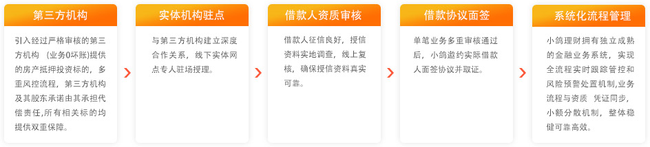
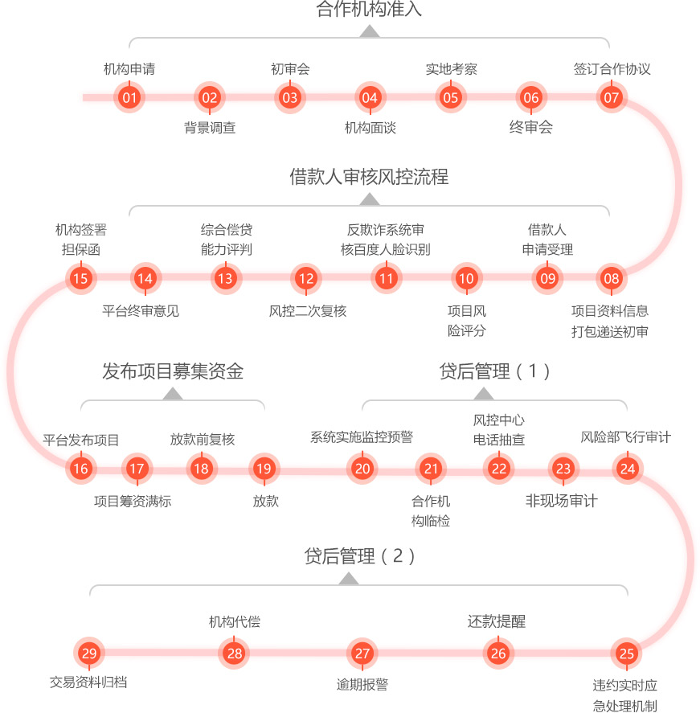
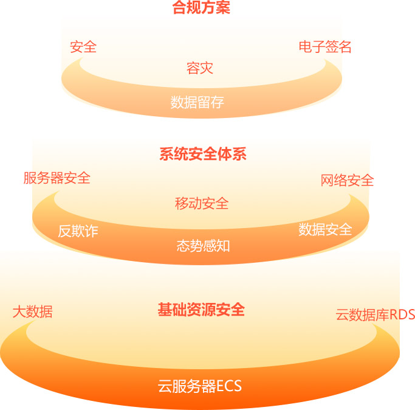
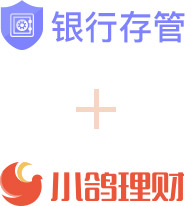

安全保障
天网系统
从源头控制风险
金盾系统
29道程序层层把控，超强风控保障
小鸽理财使用百度人脸识别技术，“穿透”借贷一一对应，10年资深国有大银行系风控团队把关，央行及8大征信机构验核体系，第三方机构担保和代偿协议，多重交叉审核确保标的资产安全可控。
国有大银行系，顶级风控团队
机构管理组
对申请合作的第三方机构进行实力评估，动态管理，定期统计分析。要求合作方通过系统对接，对每一笔业务穿
透，可以实时查询到每一笔业务的进展。
合规审计组
不定期对合作资产端机构运营情况、每一笔业务进行抽查、检查、审计、监督。
风险审批组
对合作机构标的进行二次风控审核，对接借款人房产抵押状态、原来借贷、应收银行贷款质押情况、信用记录进
行审核， 确保风险可控。主要把控原金融机构借款的真实性、客户信用、银行应付贷款情况。
风险模型策略组
对整体宏观风险情况研究，了解地区信用风险，把控行业风险情况，制定不同时期的风险策略，为风险委员会提
供决策支持。
风险决策委员会
首席风险官牵头总裁、资产端负责人、审批部负责人、法律负责人每季度召开风险会议，决定下一阶段公司风险
策略。
权威征信机构，验核体系
必须可以提供穿透资产的系统对接；
必须使用人脸识别技术或者短信鉴权技术，能从技术层面穿透到个人借款客户；
借款申请人必须在100万人口以上城市有房，并且在银行有良好的借贷记录；
合作机构注册资金在1亿以上（含），历史业务规模不低于20亿，不良率低于1%，有担保赔付能力。
银甲系统
阿里云纵深金融安全体系，构建强大底层架构
地雷系统
等保三级备案，技术合规实力强劲
根据公安部、国家保密局等四部委制定的《信息安全等级保护管理办法》，信息系统的安全保护等级根据信息系统在国家安全、经济建设、社会生活中的重要程度，分为五级，一二级适用于一般信息系统，三级认证由国家信息安全监管部门进行监督、检查，认证要求非常之严格。小鸽理财获得等保三级备案说明自身在技术、管理层面达到国家政策法规指标，并且在安全事件发生时，有足够的应对能力，快速恢复功能，从而保护客户的信息安全。
交易电子数据保全，把交易合同锁进保险箱
联手e签宝数据保全中心，为投资者提供交易凭证保全服务，交易凭证包含了担保函、担保合同、投资理财合同等，一旦保全，其内容及生成时间等信息将被加密固定，且生成唯一的保证书供下载，事后任何细微修改，都会导致保全证书函数值变化，有效防止人为篡改。如发生司法纠纷，保全证书持有人可以通过易保全电子数据保全中心提供的认证证书向法院或仲裁机构提供有效、可靠的证据。
权威加密技术，确保投资人的投资数据不受侵犯
采用权威的VeriSign SSL强制型数据传输加密保护技术，投资人在小鸽理财的传输数据将被强制加密传送和处理，确保投资人的信息不被截取，保证投资人的数据安全；投资人的投资数据被妥善存放在专用的高端数据库服务器中以备随时查阅。小鸽理财对所有用户数据进行实时备份和容灾处理，以便在发生异常时得以及时恢复。
健全的安全保护体系，全面护航信息安全
小鸽理财建立了完备的服务器数据安全体系和员工保密用户信息安全制度，全面防范外界的非法攻击和信息窃取，支持安全套接层协议和128 位加密技术；用户数据在数据库中均以AES256位算法加密存储；数据采用延迟备份与实时备份相结合方式，保障数据存储安全。
护心镜系统
银行存管
打造全流程资金防范

资金存管
规范保障资金安全
银行资金存管通过平台资金与出借人、借款人资金的隔离管理，将有效防范平台设立资金池和欺诈、侵占、挪用客户资金风险，将极大程度地增加用户投资的安全性；《网络借贷资金存管业务指引》也均对银行资金存管提出要求。2017年9月，小鸽理财银行资金存管正式上线。
打造完全合规存管
杜绝资金挪用风险
接入存管后，用户信息和资金由银行存管，平台不直接经手客户资金，也无权动用客户在银行存管系统的资金。投资人通过银行存管账户投资成功后，资金将直接进入借款人账户，使资金流转清晰可查，保障交易真实和投资人资金安全。